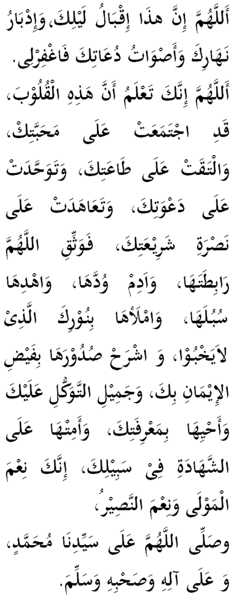

|
Terjemahan Ya Allah, menjelanglah kini malam (ciptaan)-Mu, beredarlah sudah siang-Mu, inilah keluhan suara dan pinta para du'at-Mu. Maka oleh itu ampunkanlah dosaku. Ya Allah, Engkau mengetahui bahawa hati-hati ini ....(bayangkan wajah-wajah rakan persejuangan) telah berkumpul kerana mengasihiMu, bertemu untuk mematuhi (perintahMu), bersatu memikul beban dakwahMu. Hati-hati ini telah mengikat janji setia mendaulat dan menyokong syariatMu. Maka eratkanlah ya Allah ikatannya. Kekalkan kemesraan antara hati-hati ini. Tunjukkanlah kepada hati-hati ini dengan limpahan iman/keyakinan dan keindahan tawakkal kepada-Mu. Hidup suburkan hati-hati ini dengan pengetahuan sebenar tentangMu Jika Engkau mentakdirkan mati maka matikanlah pemilik hati-hati ini sebagai para syuhada dalam perjuangan agamaMu. Engkau lah sebaik-baik sandaran dan sebaik-baik penolong. Ya Allah, perkenankanlah permintaan ini. Ya Allah restuilah dan sejahterakanlah junjungan kami (Nabi) Muhammad, keluarga dan para sahabat baginda semuanya. Amin. |

|